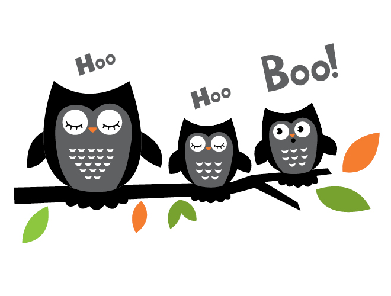

Normal:
Forced to be square:
Normal:
Width scaled to browser viewport's width:
Left/right alignment:
Veggies es bonus vobis, proinde vos postulo essum magis kohlrabi welsh onion daikon amaranth tatsoi tomatillo melon azuki bean garlic.
Gumbo beet greens corn soko endive gumbo gourd. Parsley shallot courgette tatsoi pea sprouts fava bean collard greens dandelion okra wakame tomato. Dandelion cucumber earthnut pea peanut soko zucchini.
Turnip greens yarrow ricebean rutabaga endive cauliflower sea lettuce kohlrabi amaranth water spinach avocado daikon napa cabbage asparagus winter purslane kale. Celery potato scallion desert raisin horseradish spinach carrot soko. Lotus root water spinach fennel kombu maize bamboo shoot green bean swiss chard seakale pumpkin onion chickpea gram corn pea. Brussels sprout coriander water chestnut gourd swiss chard wakame kohlrabi beetroot carrot watercress. Corn amaranth salsify bunya nuts nori azuki bean chickweed potato bell pepper artichoke.
Turnip greens yarrow ricebean rutabaga endive cauliflower sea lettuce kohlrabi amaranth water spinach avocado daikon napa cabbage asparagus winter purslane kale. Celery potato scallion desert raisin horseradish spinach carrot soko. Lotus root water spinach fennel kombu.
Image to change:
Image #0:
